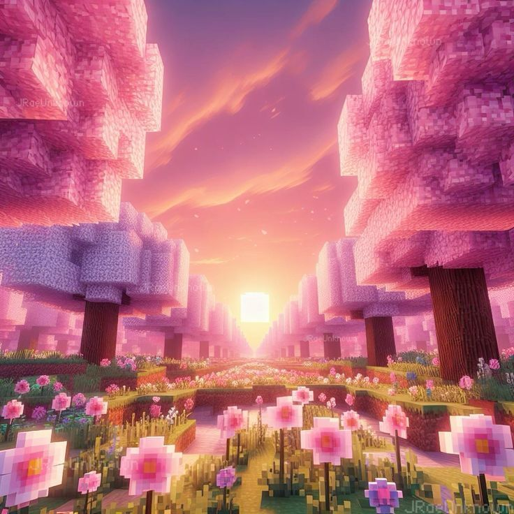
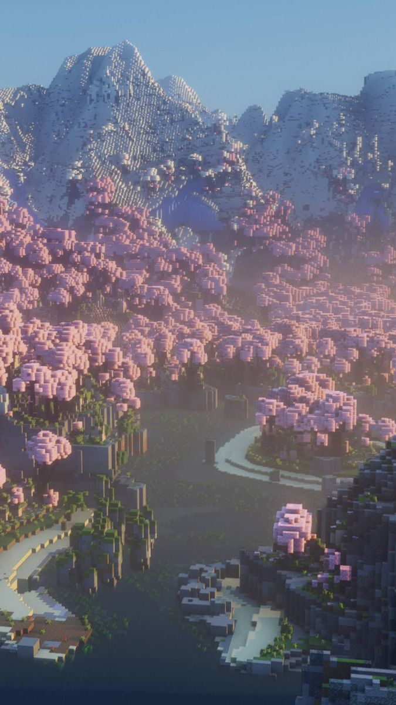
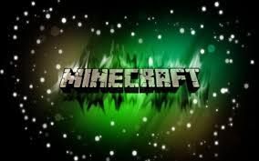

A Minecraft Világ Felfedezése
  Fedezd fel a Minecraft végtelen világát, ahol a kreativitás határtalan! Akár építesz, akár kalandozol, a Minecraft mindig új kihívásokat és kalandokat tartogat számodra. Az építkezés és a felfedezés egyesítésével olyan csodálatos alkotásokat hozhatsz létre, amelyek az egyedi stílusodat tükrözik. A játék során gyűjts erőforrásokat, építs bázisokat, és fedezd fel a különböző biómákat!
Képzeld el, hogy egy hatalmas várat építesz, vagy éppen egy rejtett kincset keresel az ősi romok között! A Minecraft nemcsak szórakoztató, de lehetőséget ad arra is, hogy a barátaiddal együtt építkezz, vagy közösen fedezd fel a világot.
Ne feledd, hogy a Minecraft folyamatosan fejlődik! Új frissítések és funkciók várnak rád, így sosem fogsz unatkozni. Fedezd fel az új blokkokat, járműveket, és élvezd a játék minden pillanatát!
Exkluzív Minecraft Funkciók
Ez az oldal exkluzív tartalmakat kínál, amelyek sehol máshol nem találhatóak. Például:
- Különleges bázisépítő tippek: Hogyan építsd fel a legmenőbb bázisokat a Minecraftban!
- Rejtett kincsek: Tippek és trükkök a legjobban elrejtett kincsek megtalálásához!
- DIY Minecraft kreatív projektek: Készíts saját Minecraft tárgyakat a valóságban!
Készen állsz a kalandra? Csatlakozz a Minecraft közösséghez, és oszd meg a tapasztalataidat!